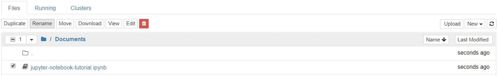

Прежде чем начать создавать свой проект, вы, вероятно, захотите дать ему осмысленное имя. Возможно, это несколько сбивает с толку: но вы не можете назвать или переименовать свои записные книжки из самого приложения для записной книжки, а для переименования файла .ipynb необходимо использовать панель мониторинга или файловый браузер. Мы вернемся к информационной панели, чтобы переименовать созданный ранее файл, который будет иметь имя файла по умолчанию для записной книжки Untitled.ipynb.
Вы не можете переименовать ноутбук во время его работы, потому что его сначала нужно выключить. Самый простой способ сделать это – выбрать «File> Close and Halt» в меню ноутбука. Однако вы также можете выключить ядро, перейдя в «Kernel> Shutdown» в приложении для ноутбука или выбрав ноутбук на приборной панели и нажав «Shutdown» (см. Изображение ниже).
Затем вы можете выбрать свой блокнот и нажать «Rename» на панели управления.

Обратите внимание, что закрытие вкладки «notebook» в вашем браузере не «закроет» вашу записную книжку так же, как закрытие документа в традиционном приложении. Ядро ноутбука будет продолжать работать в фоновом режиме и должно быть отключено, прежде чем оно действительно «закроется». Это очень удобно, если вы случайно закрыли вкладку или браузер! Если ядро закрыто, вы можете закрыть вкладку, не беспокоясь о том, работает ли оно по-прежнему или нет.